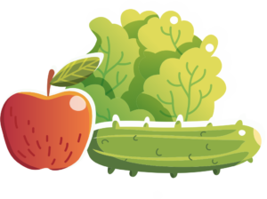
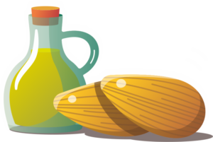

BLOG CULINAR
Bine ați venit la blogul Anei Beca

O pasiune pe care îmi doresc să o impărtășesc cu cititorii mei este alimentația echilibrată.
| Aliment | Procent |
|---|---|
| Fructe și legume | 50% |
| Proteine | 20% |
| Grăsimi | 20% |
| Cereale integrale | 10% |
Alimentația echilibrată este cea care asigură aportul nutritiv corespunzător consumului realizat de organism si este factorul esenţial în menţinerea unei stări de bine și implicit de sănătate. A mânca echilibrat înseamnă a mânca variat, din toate grupele de alimente: legume și fructe, cereale, proteine, grăsimi și chiar dulciuri, (dacă profităm de această ocazie pentru a introduce în organism nutrienți de calitate).
Recomandarea mea, bazată pe parcurgerea a nenumărate surse ți studii, este ca zilnic să includem în alimentația noastră:
Fructele conțin fibre solubile, care se comportă ca niște bureți și absorb toxinele și colesterolul (da, colesterolul în exces). Și vin la pachet cu energie, enzime, încărcătura electrică, vitamine și minerale. Dimineața, pe stomacul gol, reprezintă micul-dejun ideal. Fibrele atenuează creșterea nivelului insulinei.
Legumele sunt și ele bogate în fibre, iar un consum adecvat de fibre reduce nivelul de cortizol, stabilizează insulina și glicemia, și scade estrogenul rău (care poate reduce riscul de cancer la sân). Combina-le, joaca-te cu gusturile si texturile lor si consuma salate cat mai colorate.
O alimentaţie echilibrată trebuie să includă şi grăsimi, dar este foarte important să fim atenţi la cantitatea şi la tipul de grăsimi pe care le includem în meniu.
Corpul uman nu este făcut să consume uleiuri vegetale polisaturate, ci bogate in acizi grași Omega-6 (margarina, ulei de floarea soarelui, ulei de arahide, ulei de soia). Ele provoacă o serie de afecțiuni , procese inflamatorii și în cele din urma boli grave.
Grăsimile sănatoase, naturale, saturate și monosaturate sunt obtinute prin presare: ulei de măsline (de bună calitate, în sticlă închisă la culoare), ulei de cocos, unt de cacao, sau grăsimile animale (untură, unt) – provenite din surse sănatoase. Pețtele gras este bogat în grăsimi nesaturate Omega 3 ți protejează organismul de boli cardiace.
Apa curăță corpul, energizează și activează organele interne. Cel mai potrivit moment pentru a începe să bei apa este dimineața pe stomacul gol. Recomandarea generală este să consumi 2l de apă (nu de lichide), zilnic.
"Nu tot ce zboară se mănâncă.” Alege hrana de calitate, nu mânca orice îţi pică în mână.